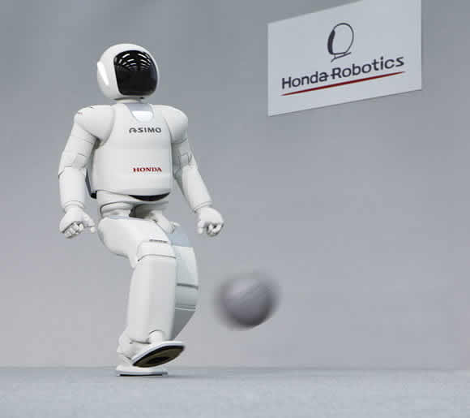

Robot comes from the Chzech word "robota" which means "forced work or labor"
Meaning of Robots
The word "Robot" is used to mean any man-made machine that can perform word or other actions normally performed by humans,
either automatically or by remote control
Most famous Robots
ASIMO

ASIMO is a humanoid robot created by Honda in 2000. Since then it has been continually developed and has become one of the worlds most advanced social robots.
ASIMO has the ability to recognise moving objects, postures, gestures, understand its environment, and interact with humans.
Unique Features: ASIMO is currently the most physically capable social robot with the ability to walk, run and eve use stairs.